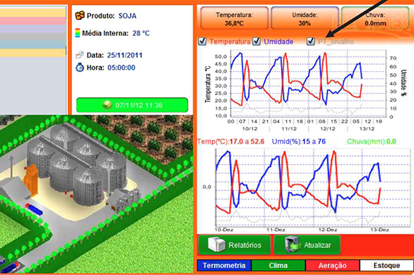
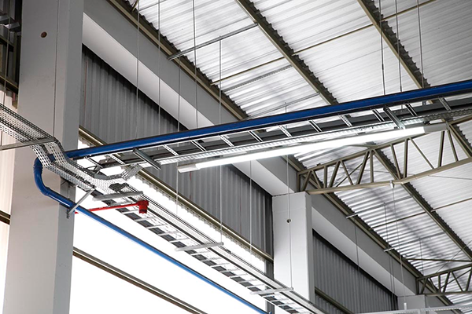
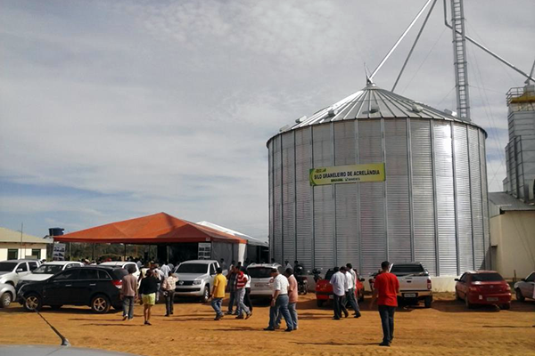

<section class="feature-section grid">
  <div class="feature-section__content col-12">
    <h2 class="feature-section__content--title col-12">Produtos e serviços</h2>
    <div class="feature-section__content--title features-list col-12">
      <p-tabView class="col-12">
        <p-tabPanel header="Automação de Secadores" class="col-4">
          <p>
            Os sistemas de automação de secadores de grãos, desenvolvidos pela EDETEC são sistemas que atuam
            automaticamente, auxiliando o operador no processo de giro, descarga e troca de carga dos secadores.
          </p>
          <br>
          <figure>
            
          </figure>
        </p-tabPanel>
        <p-tabPanel header="Quadros de comando" class="col-4">
          <p>
            Os quadros de comandos para acionamento e proteção de motores, desenvolvidos pela EDETEC podem ser manuais,
            automáticos, com CLPs e acionamento por botoeiras.
          </p>
          <br>
          <figure>
            
          </figure>
        </p-tabPanel>
        <p-tabPanel header="Termometria para Silos" class="col-4">
          <p>A termometria é uma ferramenta importantíssima no processo de armazenagem de grãos, a EDETEC vende e
            instala as principais marcas de termometria, sendo representante da marca WIDITEC.</p>
          <br>
          <figure>
            
          </figure>
        </p-tabPanel>
        <p-tabPanel header="Instalações elétricas" class="col-4">
          <p>Instalações Elétricas industriais, Sistema de SPDA (Pára-Raios), Iluminação industrial, quadros de Comando,
            Quadros de proteção, Bancos de capacitores.</p>
          <br>
          <figure>
            
          </figure>
        </p-tabPanel>
        <p-tabPanel header="Obras Realizadas" class="col-4">
          <p>A EDETEC busca sempre ser referência em todo o Brasil, no setor de instalações para agroindústria, com
            produtos e serviços de qualidade, e clientes satisfeitos em vários estados.</p>
          <br>
          <figure>
            
          </figure>
        </p-tabPanel>
      </p-tabView>
    </div>
  </div>
</section>
